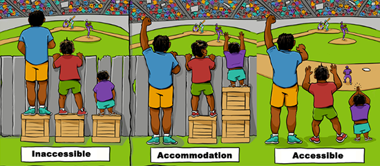

Accessibility and Accommodation
Instead of discussing disability in terms of types or models, it may be more helpful to talk about approaches to accessibility barriers. The two most common are:
- Accommodation:
- provides methods to overcome obstacles and barriers
- Accessibility:
- eliminates obstacles and barriers

| Accommodation | Accessibility |
|---|---|
| In accommodation, a product or system has barriers, but can be adapted or modified to meet the needs of an individual or group. For example, if an instructor distributes a print document in class, a student who is blind will be unable to read that document. In this case, accommodation would require the instructor to provide an alternative version of the document, such as an electronic text or audio file. | In accessibility, products and systems have no barriers, and people of all abilities can use them without modification or adaptation. For example, if an instructor directs students to read an electronic text document, everyone in the class, including the student who is blind, will be able to access the document. |
Accommodation is not the same as accessibility. Whereas accessible systems are designed to be usable by as many people as possible, regardless of disability or assistive technology, accommodations are reactive, costly, and time consuming and may not effectively address everyone’s access requirements.
Whenever possible, ASU applications, websites, and web content should be accessible and free of barriers.
Close this window
and take the quiz
and take the quiz